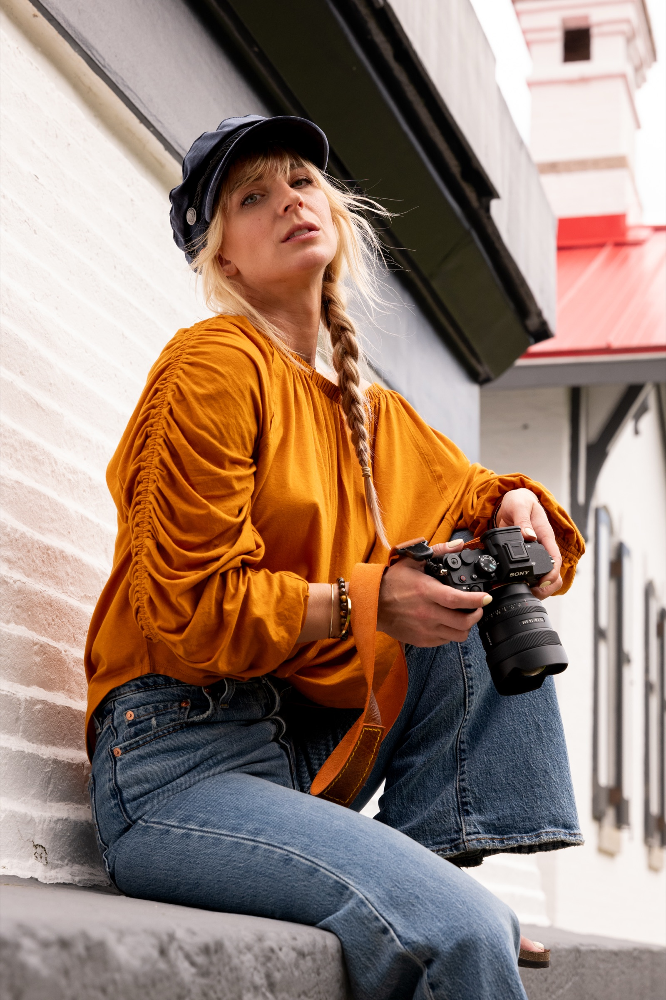

SELECTED WORK · SHOT LOG
Every frame, logged.

04‑16 · SOUTHERN ARIZONA · 300MM
Desert horizon, lifted sky

04‑16 · BISBEE, AZ · 90MM
Oxide & rust

04‑16 · BISBEE, AZ · 50MM
Behind the lens

07‑18 · CABOT TRAIL, NS · 35MM
Green cliff, grey sea

07‑18 · CABOT TRAIL, NS · 50MM
The road, patient

07‑02 · FLORIDA HAMMOCK · 35MM
Palm shade, still water

07‑22 · PEGGY'S COVE, NS · 24MM
Granite line, breaking light

07‑03 · GULF COAST, FL · 50MM
Salt air, bare feet